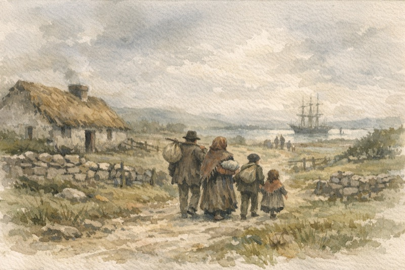

James Fitzgerald (1828–1899)
Relationship: 3rd great-grandfather (Gleeson/Fitzgerald line)
Irish Immigrant, Wisconsin Farmer
James Fitzgerald was born in 1828 in Dromin/Athlacca, County Limerick, Ireland. He emigrated to the United States during or shortly after the Great Famine, likely in the early 1850s, joining the massive wave of Irish immigration that reshaped America in that era.

On February 28, 1854, James married Margaret (Murtagh?), also Irish-born. The couple settled in Sauk County, Wisconsin, where they established a farm near the town of Ironton. Like many Irish immigrants in the Upper Midwest, they found opportunity in the rich farmland of Wisconsin, far from the poverty and famine they had left behind.

James and Margaret raised their family in Sauk County through the 1860s and 1870s. The 1870 census shows them in Ironton with children William, John, Jane, and Maria Ann (born 1865)—all born in Wisconsin. By 1880, the family had relocated to Buffalo County, Wisconsin, settling in the Town of Naples. James's brother Richard Fitzgerald had also settled in Buffalo County, near Mondovi, suggesting a chain migration pattern common among Irish families.
Their daughter Maria Ann Fitzgerald married James Joseph Gleeson in 1892, connecting the Fitzgerald family to the Gleeson line. Through Maria's daughter Anne Barbara Gleeson, this Irish heritage would eventually reach Arizona.
James Fitzgerald died on September 30, 1899, in Mondovi, Buffalo County, Wisconsin, at approximately 71 years of age. He is buried at Sacred Heart Cemetery in Mondovi.
James Fitzgerald's journey—from County Limerick through the famine years, across the Atlantic, and into the farmlands of Wisconsin—exemplified the Irish-American immigrant experience of his generation. His descendants would spread across the Upper Midwest and eventually to Arizona, carrying forward the legacy of those who left Ireland seeking a better life.
Notes:
- Birth (1828) and birthplace (Dromin/Athlacca, County Limerick, Ireland) from Geni and family records.
- Marriage (28 Feb 1854) to Margaret from family records; her maiden name variously recorded as Murtagh, Murlagh, or possibly Moloney.
- 1870 census: Ironton, Sauk County, WI with children William, John, Jane, Maria.
- 1880 census: Town of Naples, Buffalo County, WI.
- Brother Richard Fitzgerald also settled in Buffalo County (noted in county biographies).
- Death (30 Sep 1899, Mondovi, WI) and burial (Sacred Heart Cemetery) from family records and Find a Grave data.